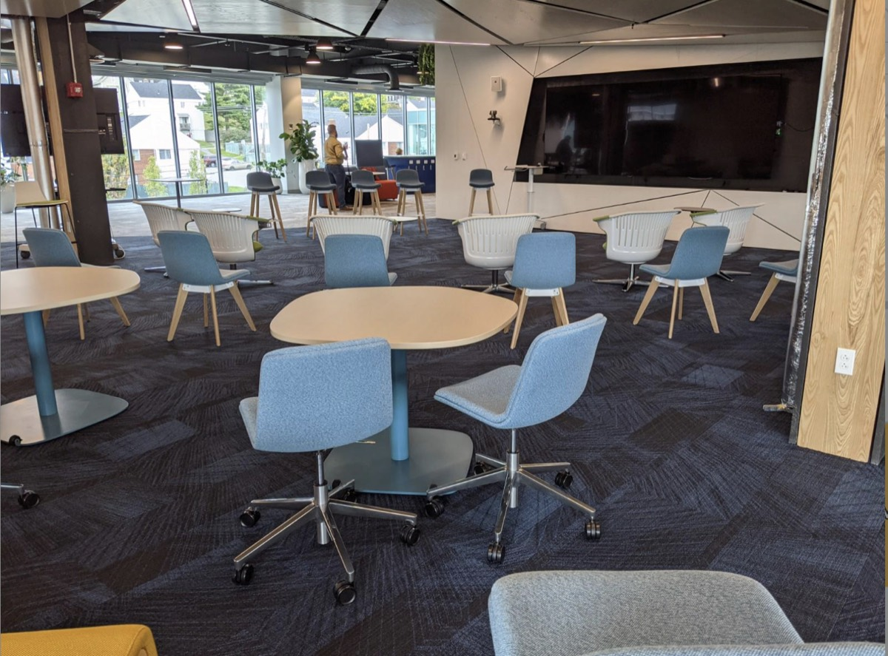
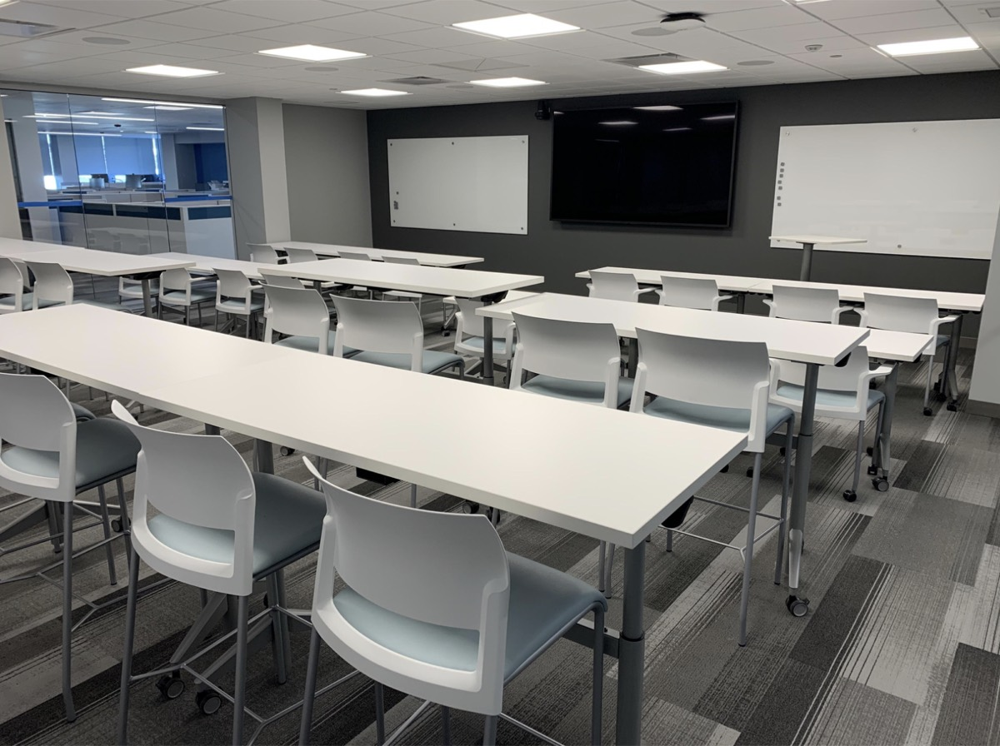
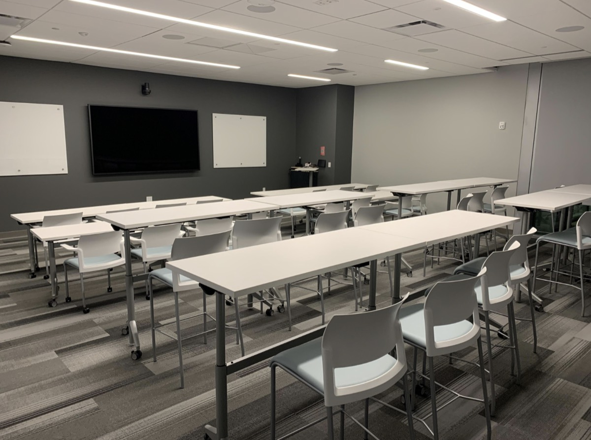
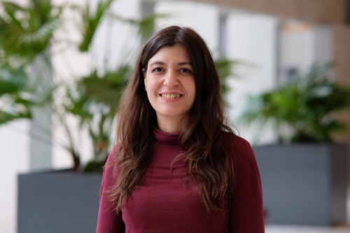

Submissions open
2026
Tenth Northeast Regional Conference on Complex Systems
April 21–23, 2027
The Roux Institute at Northeastern University, Portland, Maine
In person and online
Call for SubmissionsA decade of complex systems research in the Northeast
NERCCS 2027 continues the Northeast Regional Conference on Complex Systems, which since 2018 has brought together complex systems researchers from the Northeast United States and beyond to share results, meet their peers, and build collaborations across disciplines.
NERCCS places particular emphasis on the professional growth of early career faculty, postdoctoral researchers, and students, who will play a leading role in complex systems science and engineering in the coming years.
After a decade hosted across the region, in Binghamton, Buffalo, Potsdam and Rochester, the conference comes to Portland, Maine, for the first time.
Fully hybrid. Every session runs in person at the Roux Institute and online via Zoom, and presenters are welcome in either mode.
Authors of accepted contributions may publish full papers, free of charge, in a post-conference special issue of the Northeast Journal of Complex Systems (NEJCS).
Extended abstracts, one page including one figure
We invite submissions for presentations on a wide variety of complex systems research. Relevant topics include, but are not limited to:
Submission instructions and formatting templates will be posted when submissions open in December 2026.
All deadlines are end of day, Anywhere on Earth
2026
2027
2027
2027
2027
2027, Portland, Maine
Dates are provisional until submissions open.
To be announced
Keynote
Keynote
Keynote
Keynote
Keynote speakers will be announced as they are confirmed.
The Roux Institute at Northeastern University
The Roux Institute is Northeastern University's graduate education and research campus in Portland, on the city's East End waterfront, home to an active community of researchers, graduate students and partner organizations in artificial intelligence, data science and the life sciences.
Keynotes and plenary sessions take place in the Amphitheater on the first floor. Parallel sessions run in Kettle Cove 204 and Eastern Egg Rock 203 on the second floor, with the 201 Lounge between them for breaks and posters.
Portland is served by the Portland International Jetport, about 15 minutes from the venue, and is roughly a two-hour drive or bus ride from Boston.
The Roux Institute at Northeastern University
100 Fore Street
Portland, ME 04101
Hotel information and any negotiated rates will be posted here before registration opens.

First floor. Keynotes and plenary sessions.

Second floor. Parallel sessions.

Second floor. Parallel sessions.
Opening March 15, 2027
NERCCS keeps registration fees deliberately low so that the conference stays accessible to students and early career researchers. Rates for 2027 will be posted here when registration opens.
For reference, NERCCS 2026 charged $33 for students and postdocs, $62 for academics, $100 for industry participants, and $15 for online attendance.
Complex Systems Society, U.S. Northeast Chapter

General Chair and Program Chair
Logistics Chair
Logistics Chair
Communications
Web
Sean P. Maley (Binghamton University, SUNY) is assembling the conference program. The post-conference special issue is handled by the Northeast Journal of Complex Systems.
Supporting a decade of complex systems research in the Northeast
NERCCS is the annual meeting of the U.S. Northeast Chapter of the Complex Systems Society.
Sponsorship keeps registration affordable, brings keynote speakers to Portland, and funds student travel scholarships and presentation awards. Partnership levels run from $250 to $1,500, alongside targeted opportunities including keynote lectures, the tenth anniversary reception, coffee breaks, student scholarships and presentation awards.
To request the partnership prospectus, please write to cssusne@gmail.com.
The U.S. Northeast Chapter of the Complex Systems Society